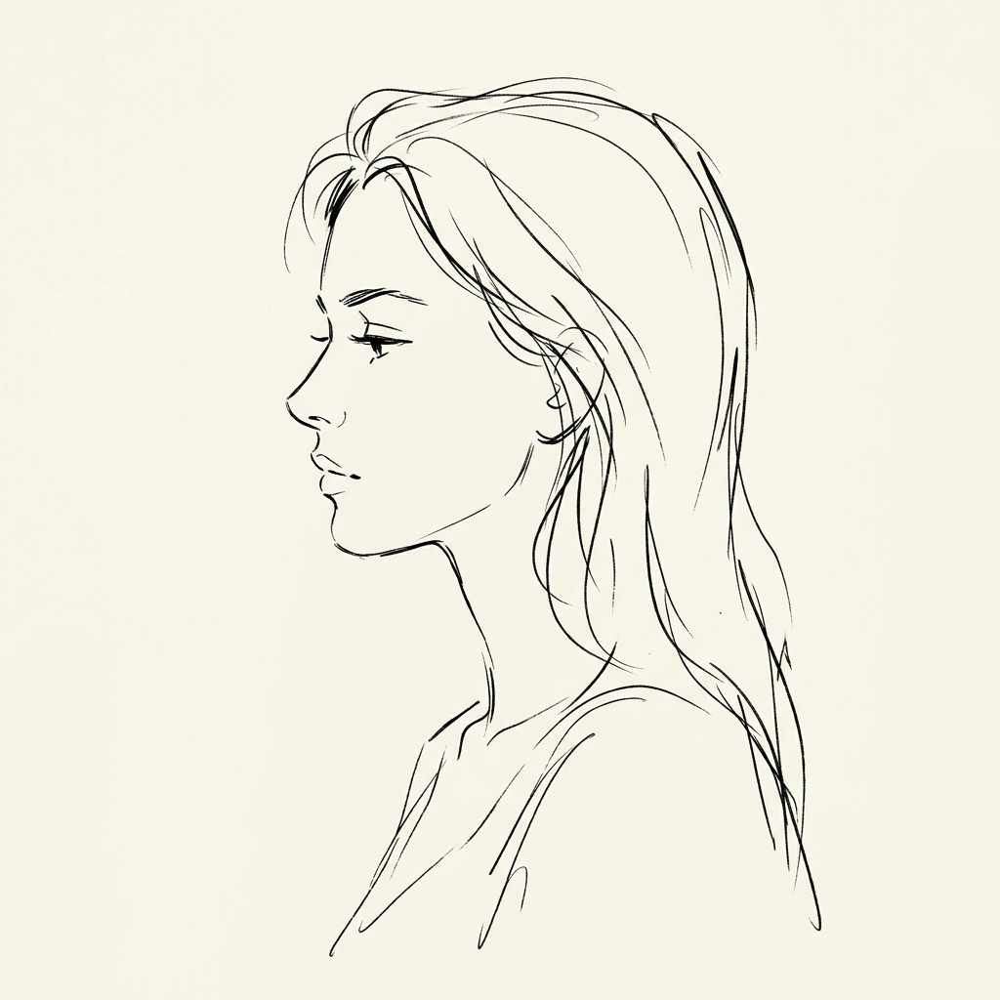

Artist Intelligence: Bastien Vivès
육체의 언어와
랏슈 트레(Trait Lâché)
데생의 완벽함보다 움직임의 에너지를 포착하는 바스티앙 비베스의 미학은 현대 그래픽 노블이 도달할 수 있는 가장 우아한 경제성을 보여줍니다.
"비베스의 화풍은 정보의 결핍이 아니라, 의미의 응축이다. 관객은 생략된 선 사이에서 비극과 희극을 동시에 읽어낸다."

Kinetic Energy Transfer
94%
역동성 전달 지수: 랏슈 트레 기법을 통한 운동성 극대화
Technique: 랏슈 트레
해방된 선의 미학
[폴리나]에서 보여지는 거칠고 해방된 선은 물리적 무게감을 예술적 자유로 변환하는 핵심 기계 장치입니다.

Style Analysis Matrix
Detail Density (디테일 밀도)
Low (20%)
Motion Fluidity (운동 유동성)
Extreme (98%)
비베스의 스타일은 운동 유동성에 올인한 극단적인 미니멀리즘을 지향합니다. 불필요한 선을 제거할수록 캐릭터의 움직임은 더 살아나며, 이는 독자의 시선이 머무는 곳을 직접적으로 통제하는 전략적 선택입니다.